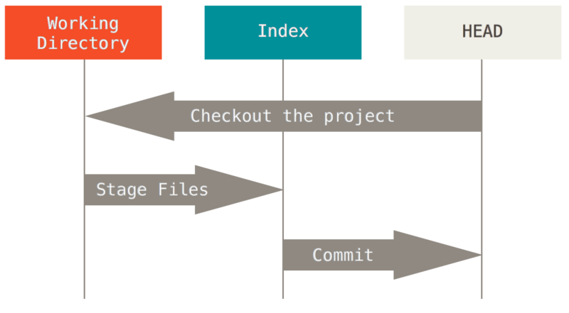

Git git git git git git git git
Starting with Git
Let me show you first my terminal workflow.whoneedssourcetree anyways???
Baby Basics
Things that everyone knows
git initgit branch -lgit checkout branchnamegit checkout -b newbranchnamegit pull
...and the list goes on
git pushgit clone https://github.com/awesomerepo/bestjs tomatogit fetchgit add somefile.txtgit status
Status of a file

Three trees
Bonus level: reset and checkout are context specific!
On a sunny day
➜ Ionic2 git:(feature/XPA3360-changeScanBizCardButton) git status
On branch feature/XPA3360-changeScanBizCardButton
Your branch is up to date with 'origin/feature/XPA3360-changeScanBizCardButton'.
nothing to commit, working tree clean
➜ Ionic2 git:(feature/XPA3360-changeScanBizCardButton) ✗ git status
On branch feature/XPA3360-changeScanBizCardButton
Your branch is behind 'origin/feature/XPA3360-changeScanBizCardButton' by 1 commit, and can be fast-forwarded.
(use "git pull" to update your local branch)
Changes to be committed:
(use "git reset HEAD ..." to unstage)
modified: src/contacts/components/contact-details-editor/contact-details-editor.html
Changes not staged for commit:
(use "git add ..." to update what will be committed)
(use "git checkout -- ..." to discard changes in working directory)
modified: src/contacts/components/contact-details-editor/contact-details-editor.scss
Untracked files:
(use "git add ..." to include in what will be committed)
poggers.txt
What's the status when there are merge conflicts?
➜ Ionic2 git:(feature/XPA3360-changeScanBizCardButton) git pull
Auto-merging src/contacts/components/contact-details-editor/contact-details-editor.html
CONFLICT (content): Merge conflict in src/contacts/components/contact-details-editor/contact-details-editor.html
Automatic merge failed; fix conflicts and then commit the result.
➜ Ionic2 git:(feature/XPA3360-changeScanBizCardButton) ✗ git status
On branch feature/XPA3360-changeScanBizCardButton
Your branch and 'origin/feature/XPA3360-changeScanBizCardButton' have diverged,
and have 1 and 1 different commits each, respectively.
(use "git pull" to merge the remote branch into yours)
You have unmerged paths.
(fix conflicts and run "git commit")
(use "git merge --abort" to abort the merge)
Changes to be committed:
modified: src/contacts/components/contact-details-editor/contact-details-editor.scss
Unmerged paths:
(use "git add ..." to mark resolution)
both modified: src/contacts/components/contact-details-editor/contact-details-editor.html
How does a merge conflict looks in a real editor?
<<<<<<<< HEAD
<button *ngIf="isNewContact" ion-button icon-top clear class="button-scan" (cvOnlineClick)="scanBusinessCard()" offlineMsg="{{ 'scan.' | translate }}">
<span class="free-dots-if-large">{{ rescan ? ('Rescan' | translate) : ('Scan' | translate) }}</span>
</button>
||||||| merged common ancestors
<div class="one-third-flex-container">
<button *ngIf="isNewContact" ion-button icon-top clear class="button-scan" (cvOnlineClick)="scanBusinessCard()" offlineMsg="{{ 'scan.' | translate }}">
<ion-icon class="icon-scan-biz-card"></ion-icon>
<span class="three-dots-if-large">{{ rescan ? ('Rescan' | translate) : ('Scan' | translate) }}</span>
</button>
</div>
=======
<button *ngIf="isNewContact" ion-button icon-top clear class="button-scan" (cvOnlineClick)="scanBusinessCard()" offlineMsg="{{ 'scan.' | translate }}">
<ion-icon class="icon-scan-biz-card"></ion-icon>
<span class="three-dots-if-large">{{ rescan ? ('Rescan' | translate) : ('Scan' | translate) }}</span>
</button>
>>>>>>>>bccc1d63acc5b2de2107691e32c010aa30ab4f9e
Diffing stuff
git diff <commit> <commit> [pathspec]
$ git diff (1)
$ git diff test (2)
$ git diff HEAD -- ./test (3)
$ git diff HEAD^ HEAD (4)
$ git diff bccc1d5 ae33f51 (5)
Note on ^ and ~ notation:
The ^
More info here -> https://mirrors.edge.kernel.org/pub/software/scm/git/docs/git-rev-parse.html
Logging
git loggit log --graphNot as good as a GUI tool, is kinda...meh, but very customizable.
When things go wrong...
Sometimes you might find yourself in a mess. Undoing things should be done carefully in a case-by-case manner. With git on terminal it's easier to do mistakes but it's also easier to fix them.
Exhibit no 1
You commit something you shouldn't have. Let's assume it's the last commit. Pretty much straight forward all you need to do is pray
git reset HEAD~1Note: reset has variants, one is really dangerous!

Exhibit no 2
You need to delete or alter a group of commits from days or months ago. Interactive rebase or cherry-pitting or checking out the commit before the group to-be-deleted and cherry-picking are your only friends.
Cherry-pit is the reverse of the cherry pick, in that you exclude commit using
git rebase -p --onto SHA^ SHA
This dude here knows what's up https://sethrobertson.github.io/GitFixUm/fixup.html
SHA^ refers to the commit to be deleted, the cherry pit does not work if there are merge commits in between.
Exhibit no 3
Last few git operations were desperate and destructive OH MY GAWD HELP ME. Don't panic. Reflog to the rescue.
git reflog
git checkout mybranch
git checkout SHA_FROM_REFLOG
Git keeps track of the operations you did and 'somehow' in 'someway' commits them so you can revert back. But I believe reflogs don't last forever.
Reeee
git rerereA rerere scenario
o---*---o---+---o---o---o---*---+---o topic
/ / / \
o---o---o---*---o---o---o---*---o---o---o---o---+ master
* : changed/touched common files
+ : merging
The PR dude might asks asks to drop all these merges to keep the history clean. So we do that, and when we open a PR we have to redo all these merge conflicts we did before!
rerere to the rererescue
- call
git rererewhen you have conflicts, but before resolving - call
git rererewhen you have resolved the conflicts - rerere rereremembers the resolution and can replay it when you need it
git merge does this automatically. The rerere info is also used in git commit and git rebasegit revert
Reverting undoes a commit by creating a new commit. The new commit is the invertion of the target commit. This is safe way undo something without risking messing the history or other people's work.
Refs
Hashes
How to get a commit SHA-1 pointed by a tag or branch? git rev-parse
What is a Ref
It's an indirect way of referring to a commit. Stored in .git/refs
Special Refs
- HEAD - Currently checkout-out commit/branch
- FETCH_HEAD - Most recently fetched branch
- ORIG_HEAD - Backup reference to HEAD before drastic changes
- MERGE_HEAD - Commits that you're merging into the current branch with
git merge - CHERRY_PICK_HEAD - Commit you're cherry picking
Refspecs
Syntax: [+]<src>:<dst>
Makes it possible to manage remote branches using local git commands.
Example: Delete remote branchgit push origin :some-feature
Example: Push master with another namegit push origin master:refs/heads/my-master
Can I push from my pc to another?
Sure you can!
git remote add foobar username@hostname/path/to/repo.git
git pull foobar master
git push foobar
Custom git commands
You can make your own git commands by writing them in your .gitconfig file under the alias section
[alias]
graph = log --graph --full-history --all --color --pretty=format:"%x1b[31m%h%x09%x1b[32m%d%x1b[0m%x20%s"
graphgraph = !"git lg2-specific --all"
springclean = "!f() { git fetch -p && for branch in `git branch -vv | grep ': gone]' | awk '{print $1}'`; do git branch -D $branch; done }; f"
oldest-ancestor = !zsh -c 'diff -u <(git rev-list --first-parent "${1:-master}") <(git rev-list --first-parent "${2:-HEAD}") | sed -ne \"s/^ //p\" | head -1' -